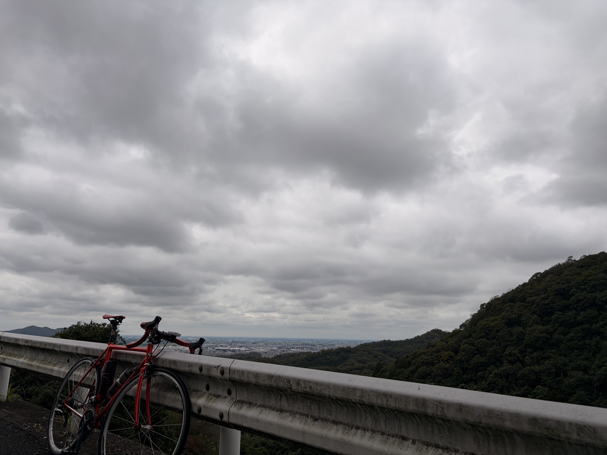
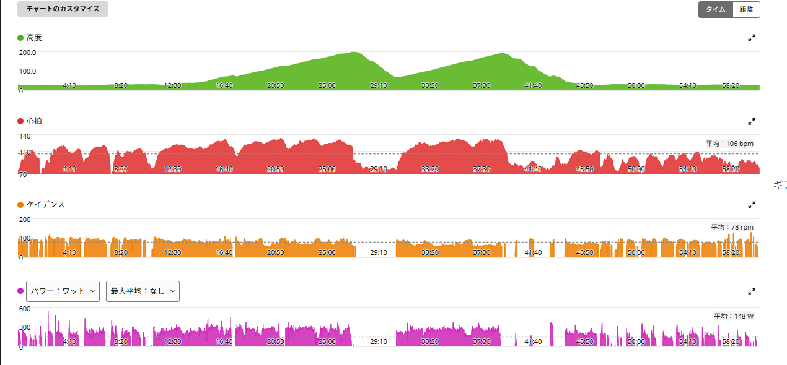
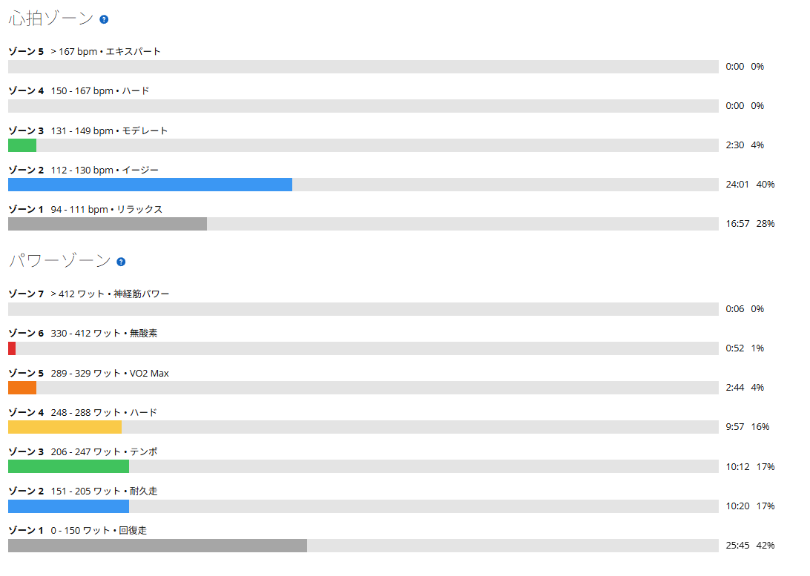

回復走のつもりだったのに、インナーローでも重かった
昨日は太平山を走ってTSS117.6。その前日にはローラーで20分×3本をやっているので、2日続けてそれなりに負荷が掛かっている。ということで今日はアクティブレスト。翌日はまた強度を入れる予定なので、1時間くらい軽く走って終わることにした。
今回はAethos2ではなく、ANCHOR RNC7で出発。これが後になって少し問題になる。

21.72km・NP200W・TSS52.6
- 全体21.72km / 59分59秒 / 獲得323m
- 負荷平均148W / NP200W / IF0.728 / TSS52.6
- 心拍・回転平均106bpm / 最大134bpm / 平均78rpm
- 心拍ゾーンZ1 16分57秒 / Z2 24分01秒 / Z3 2分30秒 / Z4以上はゼロ
最近の私は、回復走と言いながら途中で踏み始めることがある。今日はさすがにそれをやらない。心拍を見ると平均106bpm、ゾーン4以上はゼロ。トレーニング効果も「ベース 2.4」。ここまではちゃんと回復日っぽい。
問題はコースだった。
回復走なのに山へ行く。インナーローでも重かった
- 登り111分15秒 / 231W
- 登り27分19秒 / 248W / 平均66rpm
なぜ回復走で獲得標高323mあるのか。山へ行ったからである。当然である。
数字だけ見ると「回復走の日に低ケイデンスでトルク練習でもしたの？」となりそうだが、今回は違う。単純にANCHORのギアが足りなかった。2本目の登りは平均66rpm。別に「今日は低ケイデンスで刺激を入れておこう」と考えて66rpmにしたわけではない。インナーローにしても重かった。もう軽くするギアがないので、トルクを掛けて登るしかない。
Aethos2ならもう少し回転を使って登れるところでも、ANCHORではそうはいかなかった。自転車が違えば、同じ道でも走り方が変わる。当たり前のことだけれど、こうして数字で見るとなかなか面白い。

66rpmで248W。それでも心拍は125bpm
ただ、一つ興味深かったのが心拍だった。7分19秒・248W・66rpmで登っているのに、平均心拍は125bpm。もちろん回復走として積極的にやるような走り方ではないし、低回転でこれだけ踏めば脚には負荷が掛かる。それでも心肺的にはかなり余裕があった。
以前の回復走でも、試しにケイデンスを67rpmまで落として1分間239Wで踏んだことがある。そのときも「トルクを掛ければ240Wくらいでも心拍は苦しくない」と感じていた。今回は意図した実験ではなかったものの、似た傾向になった。
高いパワーを出す方法は一つではない。回転を上げれば心肺側を使いやすくなり、回転を落とせば一踏みのトルクが必要になる。最近60/30でもケイデンスを変えながら試しているので、この違いが以前より分かりやすくなってきた。ただし今日はトルク練習ではない。ギアがなかっただけである。
回復日としては合格。2週間前とほぼ同じ数字だった
登りだけ切り取ると248Wまで出しているが、ライド全体では平均148W。パワーゾーンはゾーン1が42%で、心拍もゾーン1〜2が中心だった。昨日の太平山がNP250Wだったのに対して、今日はNP200W。
ところで、ちょうど2週間前にも同じANCHORで似たような回復走をやっている。並べてみたら、驚くほど似ていた。
- 8月20日21.91km / 59分20秒 / 獲得319m / 平均150W / NP206W / TSS54.8 / 心拍116bpm
- 今日21.72km / 59分59秒 / 獲得323m / 平均148W / NP200W / TSS52.6 / 心拍106bpm
距離は0.2km差、時間は40秒差、獲得標高は4m差、平均パワーは2W差。ほぼ同じライドと言っていい。それなのに平均心拍は10bpm低い。最大心拍も151bpmから134bpmへ下がっている。
ただしこれを「強くなった」だけで説明するのは無理がある。8月20日は平均31.4℃、最高35.0℃という猛烈な暑さだった。今日は写真のとおり厚い曇り空で、日差しもない。暑さは心拍をはっきり押し上げるので、この10bpmの大半は気温差かもしれない。それでも、同じような日を並べて比べられるようになってきたこと自体は面白い。

とはいえ、完全な平坦回復走より脚へ刺激が入ったのは間違いない。回復走の日に山へ行っておいて「インナーローでも重かった」と言っている時点で、コース選択がおかしい気もする。次に本当に脚を休ませたい日は平坦を走ろう。たぶん。
明日は再び60/30
今日はこれで終了。明日は再び60秒ON／30秒OFFをやる予定である。
前回の60/30では、ケイデンス100rpmを超えると400W近くまで簡単に上がる一方、85rpm付近まで落とすと350W前後の維持が難しくなることが分かった。次はその中間。90〜95rpm付近で350〜365Wを揃える。高く入りすぎず、最後まで同じ出力を維持できるかを試してみる。
今日はANCHORのギア比のおかげで予定外の低ケイデンスになったが、明日はちゃんと自分でケイデンスを選べる。最近は「何W出たか」だけではなく「どうやってそのパワーを出したのか」を見るのが少し面白くなってきた。明日もまた実験である。
次に見るポイント
- 明日の60/3090〜95rpm付近で350〜365Wを2セット揃えられるか
- 回復走のコース本当に休ませたい日に、ちゃんと平坦を選べるか
- 心拍の比較涼しくなってから同じコースを走り、10bpm差のどこまでが気温だったか見る
- ギア比ANCHORで山へ行くなら、この重さを前提に走り方を決められるか